Confirmaciones · Mesas · Alimentación
El panel es la página donde ves quién confirmó su asistencia a tu evento y organizás las mesas. Funciona igual en el celular y en la computadora.
Arriba de todo vas a ver el resumen de tu evento.
Los números se actualizan solos a medida que tus invitados responden desde la invitación. Si tenés el panel abierto hace rato, recargá la página para ver las últimas respuestas.
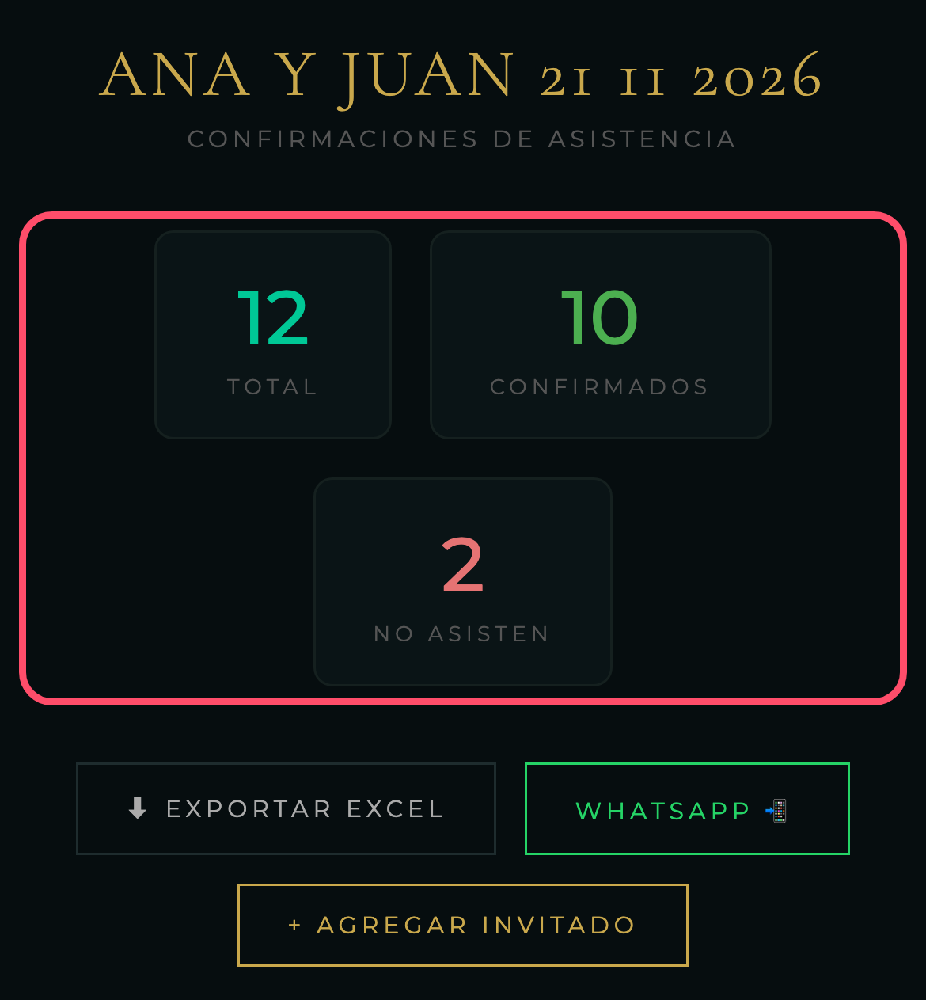
Tip: los filtros se combinan. Por ejemplo, “Confirmados” + “Sin mesa” te muestra exactamente a quién te queda sentar.
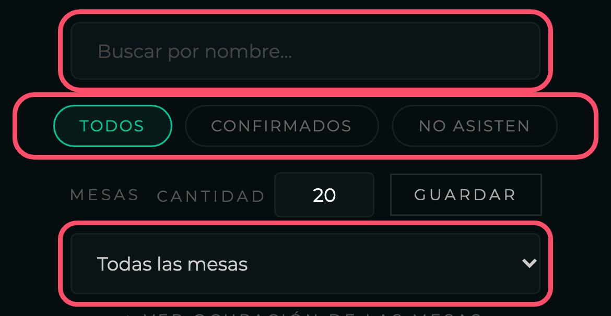
Cada invitado ocupa una fila. Desde ahí podés corregir lo que respondió y ubicarlo en una mesa.
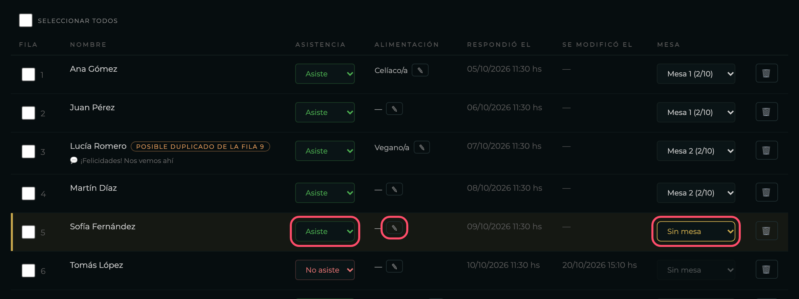
Las filas con una línea dorada a la izquierda son invitados confirmados que todavía no tienen mesa.
En el celular la tabla es más ancha que la pantalla: deslizala con el dedo hacia la izquierda para ver Alimentación, Mesa y el tacho para eliminar.
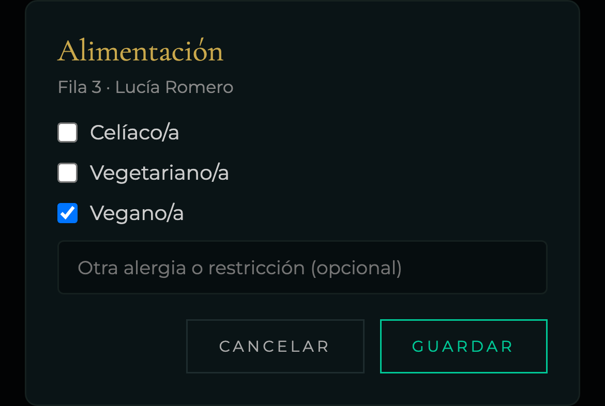
Sin mesa confirmados que te faltan ubicar.
Mesa 3 · 10/10 mesa completa.
Si querés bajar la cantidad de mesas y alguna de las que se van tiene gente sentada, el panel te avisa cuáles para que primero los cambies de mesa.
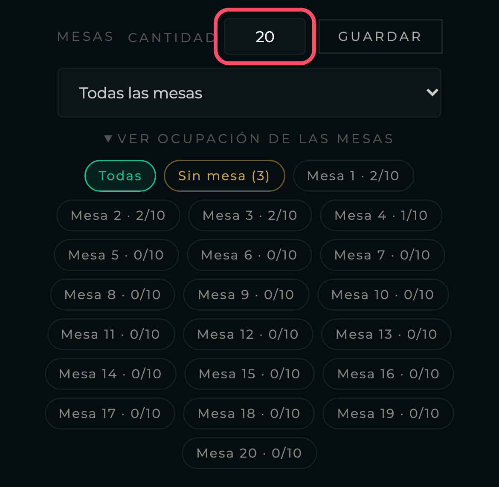
Para alguien que te confirmó por teléfono o en persona.
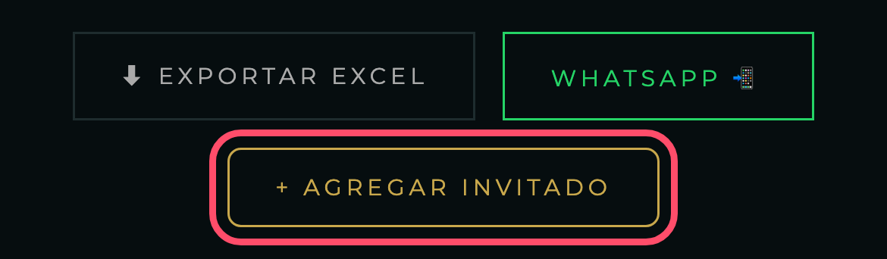
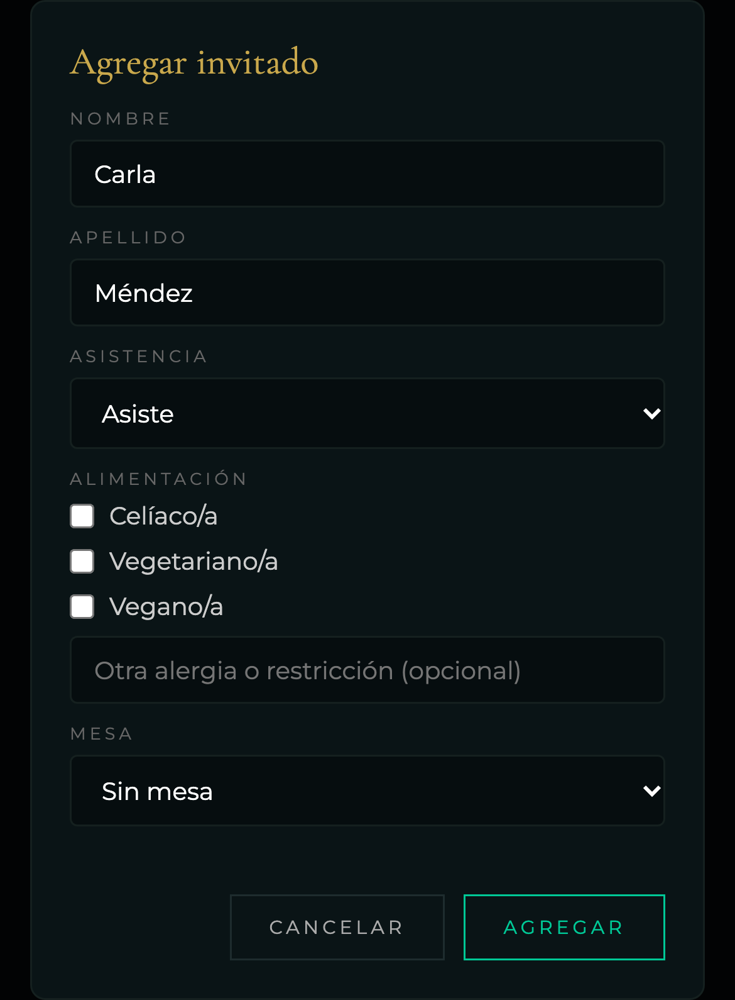
Si alguien respondió dos veces, el panel lo marca y te dice con qué fila coincide. Reconoce el mismo nombre aunque esté escrito distinto (“Lucía Romero” y “lucia romero”).
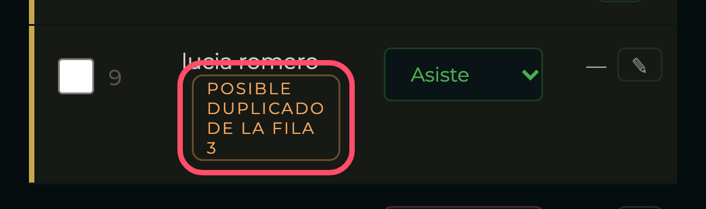
Revisá las dos filas y eliminá la que sobra (sección 7). El número de fila es el de la primera columna de la tabla.
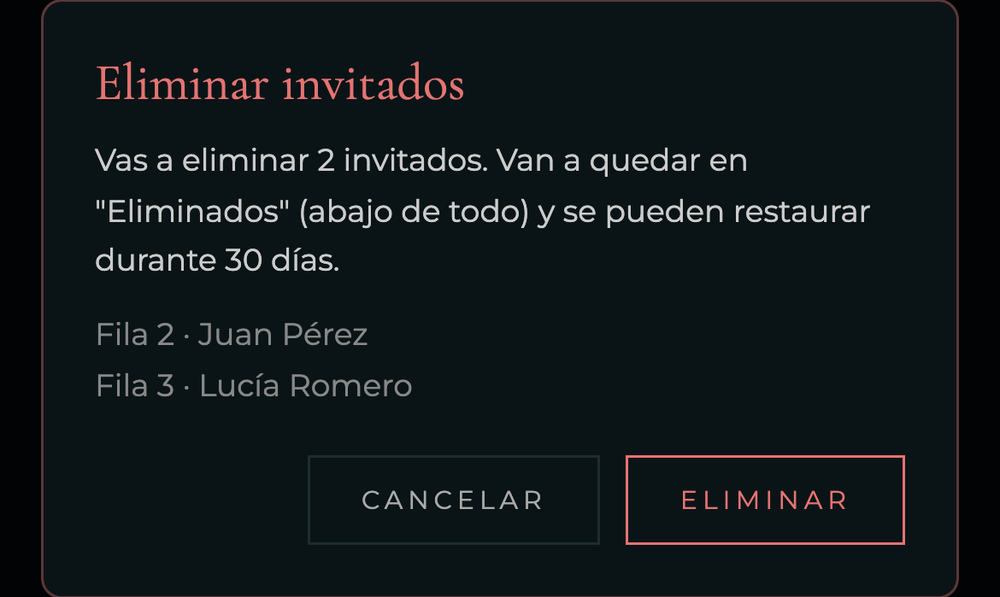
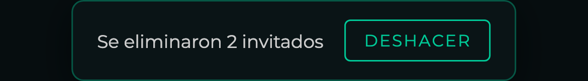
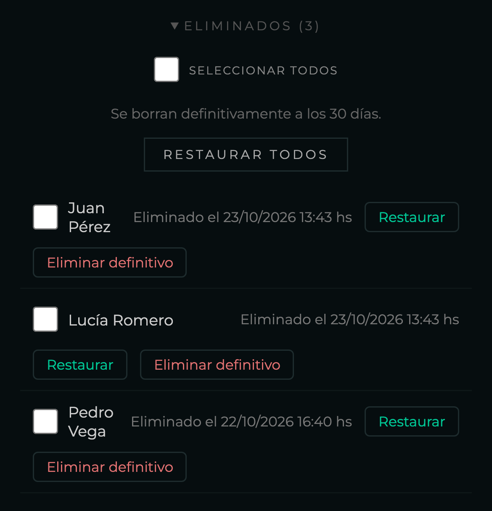
Debajo de las mesas tenés el resumen Para el catering: cuántos confirmados necesitan cada tipo de menú. Se actualiza solo.
El Excel trae arriba el resumen para el catering y después la lista con fila, nombre, asistencia, alimentación, mensaje y mesa, listo para mandarle al salón o al catering.
El botón WhatsApp sirve para mandarle el link del panel a otra persona que organice con vos.
Ante cualquier duda, escribinos. ¡Que disfruten la fiesta!